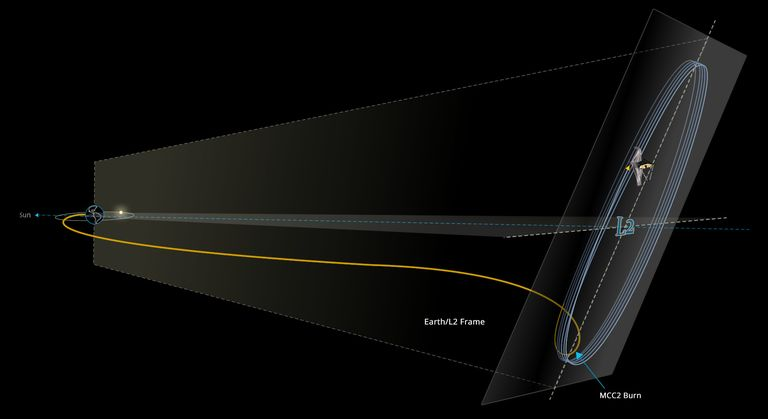
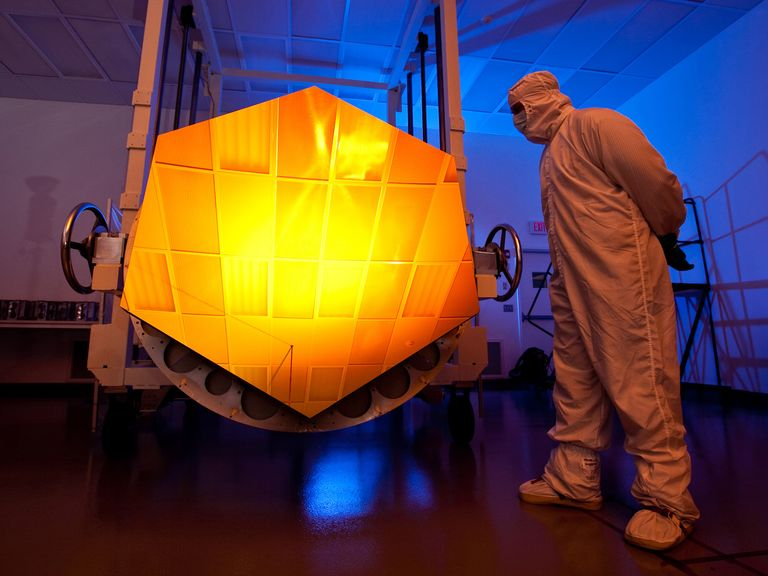

ပြီးခဲ့တဲ့ ဇန်နဝါရီလ ၂၄ ရက်နေ့က ဂျိမ်းစ်ဝက်ဘ် တယ်လီစကုပ် ကြီးဟာ သူ့ရဲ့ လမ်းကြောင်းထိန်း ဒုံးစက်တွေကို တတိယ အကြိမ်မြောက် နှိုးပြီး လမ်းကြောင်း တည့်မတ် အပြီးမှာတော့ နေပါတ် လမ်းကြောင်း ပေါ်က လာဂရန် အမှတ် ၂ (Lagrange Point L2) ပေါ်ကို အောင်မြင်စွာ ရောက်ရှိ သွားပြီလို့ ဆိုပါတယ်။
ဆက်စပ် ဆောင်းပါး – စကြာဝဠာရဲ့ မူလအစကို ရှာဖွေပေးမယ့် James Webb တယ်လီစကုပ်ကြီး
ဒီလို လမ်းကြောင်းထိန်း ဒုံးစက်တွေ နှိုးပြီး လမ်းကြောင်း ထိန်းညှိမှုဟာ အချိန် ၅ မိနစ် ခန့်ပဲ ကြာမြင့်ပါတယ်။ ဒါပေမယ့် ဒီနေရာ ရောက်ဖို့ ကမ္ဘာကနေ အချိန် တစ်လခန့် ကြာအောင် ခရီးနှင်ခဲ့ ရတာပါ။
“တို့အိမ်ရောက်ပြီ” လို့ ဒီ စီမံကိန်းရဲ့ ဒုတိယ အကြီးအကဲ ဖြစ်သူ ဗင့်စ် ဟက်ဂ် (Vince Heeg) က မှတ်ချက် ပေးပါတယ်။
နောက်တဆင့် ကတော့ ဒီ ဂျိမ်းစ်ဝက်ဘ် တယ်လီစကုပ်ကြီးကို အသေးစိတ် ချိန်ညှိမှုတွေ ပြုလုပ်ရမှာ ဖြစ်ပါတယ်။

ဒီ L2 အမှတ်ကို တစ်ပတ် ပတ်မိဖို့ အချိန် ၁၈၀ ရက် ကြာမှာ ဖြစ်ပါတယ်။ ဒီ ပတ်လမ်းဟာ အချင်း မိုင် ၁ သန်းလောက် ရှိပါတယ်။ ဒီ နေရာကနေ L2 အမှတ်ကို ပတ်နေရင်း ကနေ ကမ္ဘာက နေကို ပတ်တဲ့ နောက်လဲ လိုက်ပြီး ပတ်နေမှာ ဖြစ်ပါတယ်။
ဒီ အမှတ်ကနေဆို ပတ်ခြာလည်က စကြာဝဠာ တစ်ခုလုံးကို ကြည့်ရှု လေ့လာနိုင်မှာ ဖြစ်ပါတယ်။ ဘယ်အချိန် မဆို ဒီ တယ်လီစကုပ် ကြီးဟာ စကြာဝဠာ တစ်ခုလုံးရဲ့ ၃ ပုံ တစ်ပုံကို မြင်နိုင်စွမ်း ရှိပြီး နေကို တစ်ပါတ် ပတ်မိတဲ့ တစ်နှစ် အတွင်းမှာ စကြာဝဠာ တစ်ခုလုံးကို လေ့လာနိုင်မှာ ဖြစ်ပါတယ်။
ဒီ အမှတ်ကနေ James Webb တယ်လီစကုပ် ကြီးဟာ နေရဲ့ ဆန့်ကျင်ဖက်ကို မျက်နှာမူပြီး ကြယ်တွေကို ကြည့်ရှု လေ့လာမှာ ဖြစ်ပါတယ်။ သူ့ရဲ့ အနီအောက် ရောခြည် ကင်မရာ တွေကို နေရဲ့ အပူချိန် မကျရောက်အောင် ကာကွယ်ဖို့ ကြီးမားတဲ့ နေရောင်ကာ ဒိုင်းကြီးတွေက အကာအကွယ် ပေးထားမှာ ဖြစ်ပါတယ်။
ဒီ တယ်လီစကုပ်ကြီးဟာ မြေပြင်က Deep Space Network ရေဒီယို အသံဖမ်း တိုင်တွေနဲ့ တတန်းထဲမို့ မြေပြင်နဲ့ အဆက်အသွယ်လဲ ၂၄ နာရီ မပြတ် ဆက်သွယ်နိုင်မှာ ဖြစ်ပါတယ်။ နောက်ပြီး လာဂရန် အမှတ်ဟာ ဆွဲငင်အားတွေ မျှတတဲ့ အရပ်မို့ ဒီ တယ်လီစကုပ်ကြီးကို လမ်းကြောင်းပေါ် တည်ငြိမ်နေအောင် ထိန်းဖို့ လိုအပ်တဲ့ လောင်စာဆီ ပမာဏ ကလဲ သိပ်အများကြီး လိုအပ်မှာ မဟုတ်ဘူးလို့ သိရပါတယ်။

နောက်ဘာဆက်ဖြစ်ကြမလဲ
ဒီ တယ်လီစကုပ် ကြီးက အခုချက်ချင်း ဂလက်ဆီ တွေကို လေ့လာရေး စလုပ်လို့တော့ မရ သေးပါဘူး။ အနည်းဆုံး တစ်ပါတ်လောက်တော့ အပူချိန် ကျပြီး အေးသွားတာကို စောင့်ရဦးမယ်လို့ သိရပါတယ်။နောက်အပါတ်လောက် မှာတော့ ဒီ စီမံကိန်းရဲ့ နောက်တဆင့်ကို တက်လှမ်းနိုင်မယ်လို့ ဆိုပါတယ်။ ဒီ အဆင့်ကတော့ တယ်လီစကုပ်ကြီးကို ဖွဲ့စည်းထားတဲ့ မှန်ချပ်တွေကို သေချာ နေရာကျအောင် အသေးစိတ် ချိန်ညှိရတဲ့ အလုပ်ပဲ ဖြစ်ပါတယ်။ ဒီ ချိန်ညှိမှုကို တယ်လီစကုပ်ကြီးရဲ့ အပူချိန် ၁၀၀ K (အနှုတ် ၁၇၃ ဒီဂရီ စင်တီဂရိတ်) လောက်အထိ အေးသွားမှ စတင်လို့ ရမှာပါ။
ဒီလို အပူချိန် ကျသွားအောင် တယ်လီစကုပ်ကြီးရဲ့ နေကာ ပြားကြီးတွေက ဆောင်ရွက်ပေးမှာ ဖြစ်ပါတယ်။ နေကာပြား တွေရဲ့ အရိပ်အောက်မှာ တယ်လီစကုပ်နဲ့ အာရုံခံ ကိရိယာ တွေဟာ လျှင်မြန်စွာ အေးလာကြမယ်လို့ ဆိုပါတယ်။
တယ်လီစကုပ်ကြီးမှာ အလင်းပြန် မှန်ချပ်ပေါင်း ၁၈ ချပ် ရှိပြီး ဒီမှန်ချပ် တစ်ချပ်ချင်းစီကို အသေးစိတ် ချိန်ညှိပေးရပါတယ်။
ဒီလို ချိန်ညှိဖို့ ပထမဆုံး ကမ္ဘာနဲ့ သိပ်မဝေးတဲ့ နေရာက ကြယ်တစ်စင်း ဖြစ်တဲ့ HD84406 ကို ချိန်ပြီး မှန်တစ်ချပ်ချင်း စီကနေ ဓါတ်ပုံ ရိုက်ယူမှာ ဖြစ်ပါတယ်။ ဒီ့နောက်မှာ ရလာတဲ့ ပုံတွေကို ကွန်ပြူတာ ကနေ အသေးစိတ် ကြည့်ရှုပြီး ဘယ်လောက် ချိန်ညှိပေးရ မလဲ ဆိုတာကို မှန်တစ်ချပ်ချင်း စီအတွက် တွက်ချက်ပြီး ချိန်ညှိပေးမှာ ဖြစ်ပါတယ်။ ဒီ ချိန်ညှိတဲ့ ဖြစ်စဉ်ကို ထပ်ခါ ထပ်ခါ မှန်ချပ်အားလုံး အနေအထား မမှန်မချင်း ပြုလုပ်ရမှာ ဖြစ်ပါတယ်။

ဒီ ဖြစ်စဉ်ကြီး တစ်ခုလုံးဟာ အချိန်ကာလ အားဖြင့် အလွန်ကြာမြင့်တဲ့ လုပ်ငန်း ဖြစ်ပါတယ်။ မှန်တွေ အားလုံးကို အတိအကျ နေသားတကျ ဖြစ်တဲ့ အထိ ထပ်ခါ ထပ်ခါ ချိန်ညှိဖို့ လိုအပ်ပါလိမ့်မယ်။ ဒီ ဖြစ်စဉ် တစ်ခုလုံး ၃ လလောက်ထိ ကြာမယ်လို့ ခန့်မှန်း ထားပါတယ်။
ဘာတွေကိုလေ့လာမှာလဲ
ပထမ တစ်နှစ် အတွင်းမှာတော့ ကြိုတင် ရေးဆွဲထားတဲ့ လေ့လာမှု စီမံကိန်းပေါင်း ၃၀၀ ကျော်ကို ဆောင်ရွက်မှာ ဖြစ်ပါတယ်။ ဒီ စီမံကိန်း တွေဟာ စကြာဝဠာရဲ့ မူလအစ၊ ဂလက်ဆီများ ဖြစ်ပေါ်လာပုံနှင့် စကြာဝဠာ၏ သမိုင်းကြောင်း၊ ကြယ်တွေ ဂြိုဟ်တွေ ဖြစ်ပေါ်လာပုံ နှင့် ဂြိုဟ်အဖွဲ့အစည်းများ အလုပ်လုပ်ပုံ ဆိုတဲ့ မေးခွန်းတွေကို ဖြေကြားပေးနိုင်ဖို့ ပြုလုပ်မယ့် သုတေသနတွေ ဖြစ်ကြပါတယ်။ဒီ လေ့လာရေးတွေ ထဲမှာ အရေးပါတဲ့ သုတေသန တွေကတော့ အဝေးက ဂြိုဟ်တွေရဲ့ လေထုကို လေ့လာရေး ဟာလဲ စကြာဝဠာ ထဲ သက်ရှိတွေ ရှာဖွေရေး အတွက် အရေးပါတဲ့ သုတေသန တစ်ခု ဖြစ်ပါတယ်။ နောက်ပြီး စကြာဝဠာ ပေါ်ထွန်းစက မွေးဖွားလာတဲ့ အဦးပိုင်း ဂလက်ဆီတွေကို လေ့လာရေး ဟာလဲ စကြာဝဠာ ဖြစ်ထွန်းလာပုံနဲ့ ပြောင်းလဲလာ ပုံတွေကို လေ့လာဖို့ အလွန် အရေးပါတဲ့သုတေသန တစ်ခုပါ။

ဘယ်တော့ဓါတ်ပုံတွေမြင်ရမှာလဲ
ဒီ တယ်လီစကုပ်က ရိုက်ထားတဲ့ ပထမဆုံး ဓါတ်ပုံတွေကို နောက် ၅ လလောက် အကြာမှာ ထုတ်ပြန်မယ်လို့ နာဆာက ကြေငြာ ထားပါတယ်။ ဒီ ဓါတ်ပုံတွေ ထုတ်ပြန် အပြီးမှာတော့ ဒီ တယ်လီစကုပ်က ကောက်ယူ ရရှိတဲ့ အချက်အလက်တွေကို ပုံမှန် ထုတ်ပြန် သွားမယ်လို့ ဆိုပါတယ်။ ဒီ အချက်အလက်တွေကို အသုံးပြုပြီး အခြား တက္ကသိုလ်တွေနဲ့ သုတေသန ဌာနတွေ အနေနဲ့လဲ သီးခြား သုတေသနတွေ ပြုလုပ်နိုင် ကြမှာ ဖြစ်ပါတယ်။ပျက်သွားရင်ရောပြင်နိုင်မလား
ဒီ အမှတ်ဟာ ကမ္ဘာနဲ့ အရမ်းဝေးတာမို့ အကြောင်းကြောင်းကြောင့် ပျက်စီးမှု ချို့ယွင်းမှု တစ်စုံ တစ်ရာ ဖြစ်ခဲ့ရင် ပြုပြင်နိုင်မှာ မဟုတ်ဘူးလို့ ဆိုပါတယ်။ ဒါပေမယ့် ဒီ တယ်လီစကုပ်ကို အလွယ်တကူ မပျက်စီး နိုင်အောင် ခိုင်ခိုင်ခံ့ခံ့ သေသေ ချာချာ ပြုလုပ် ထားတာမို့ ပျက်ဖို့ ဆိုတာ အလွန် ခဲယဉ်းမယ်လို့ ဆိုပါတယ်။ဘယ်လောက်ကြာကြာခံမှာလဲ
မူလ သတ်မှတ်ချက် အရ ဒီ တယ်လီစကုပ်ရဲ့ သက်တမ်းဟာ ၁၀ နှစ် ဖြစ်ပါတယ်။ ဒါပေမယ့် ပညာရှင် တွေကတော့ တကယ် လက်တွေ့မှာ ဒီ့ထက်မက ပိုပြီး ကြာကြာ အသုံးပြုနိုင်မယ်လို့ ယုံကြည် ကြပါတယ်။ ယာဉ်ပေါ် ပါတဲ့ လောင်စာ ပမာဏဟာ နောင် ၁၀ နှစ်မက ခံလိမ့်မယ်လို့ ဆိုကြပါတယ်။နောက်ဆုံး လောင်ဆာ ကုန်ခါနီး ကြရင်တော့ James Webb တယ်လီစကုပ်ကြီးဟာ လာဂရန် အမှတ် ၂ နေရာကနေ ခွာပြီး နေပတ်လမ်းကြောင်းထဲကို ဝင်ရောက်သွားမှာ ဖြစ်ပါတယ်။ ဒီနည်းအားဖြင့် နောင်လာမယ့် အနာဂါတ် မျိုးဆက် တွေအတွက် သမိုင်းဝင် အထိမ်းအမှတ် တစ်ခု အနေနဲ့ ရာစုနှစ် များစွာ ကျန်ရှိနေမှာ ဖြစ်ကြောင်း တင်ပြလိုက်ရပါတယ်။
Reference: NASA’s James Webb Telescope has Pulled into its Cosmic Parking Spot. Now What? | Popular Mechanics